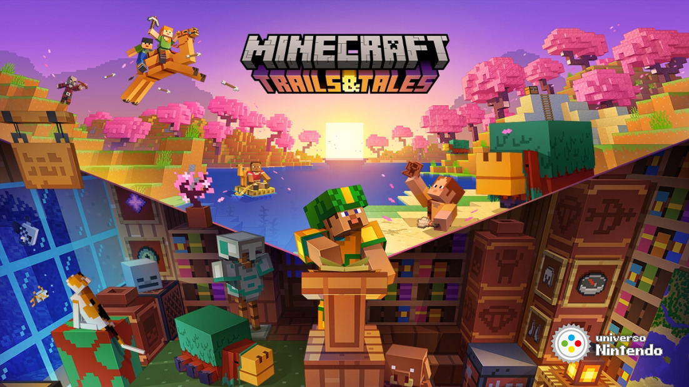

Minecraft é um jogo eletrônico lançado em 2009 que consiste em sobreviver em um mundo formado (majoritariamente) por blocos cúbicos. Steve, o personagem controlado pelo jogador, inicia o jogo em um ambiente repleto de árvores, montanhas, rios.
Atualizações
